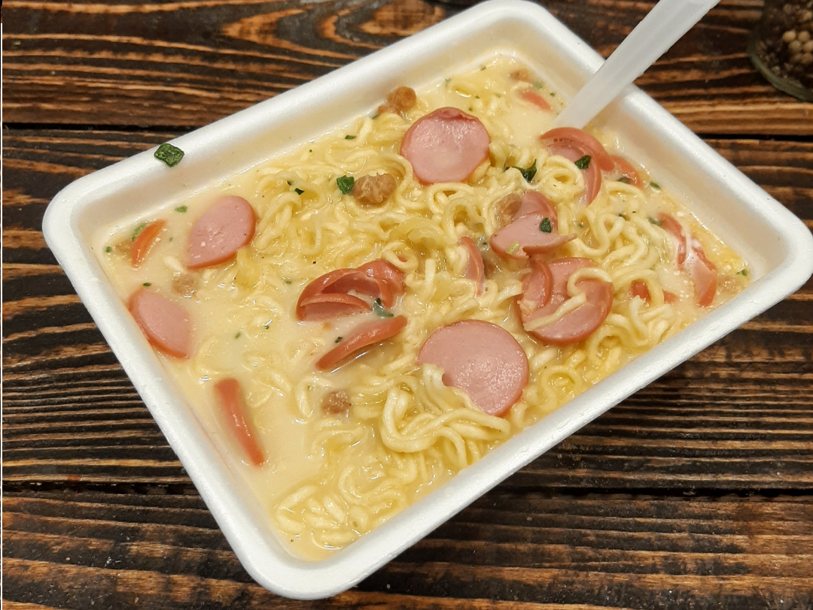
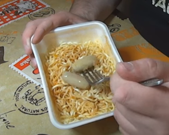

Роллтон
Для приготовления понадобится:
- Роллтон
- Вода
- Сосисочка
- Майонез
- 1 шт.
- 250 мл.
- По вкусу
- По возможности
Размельчаем лапшу, высыпаем приправы и нарезаем сосиску тонкими дольками. На упаковку доширака достаточно 70 грамм сосиски. Вообще, кроме сосиски в Роллтон можно добавлять практически все, что угодно: мясную нарезку,колбасу,поджареную говядину !


Перемешиваем ингредиенты по часовой стрелке 4 оборота !
Можно добавить майонез по вкусу.

Заливаем кипятком и оставляем завариваться на 5-10 минут !
Наслаждайтесь!
^ Наверх